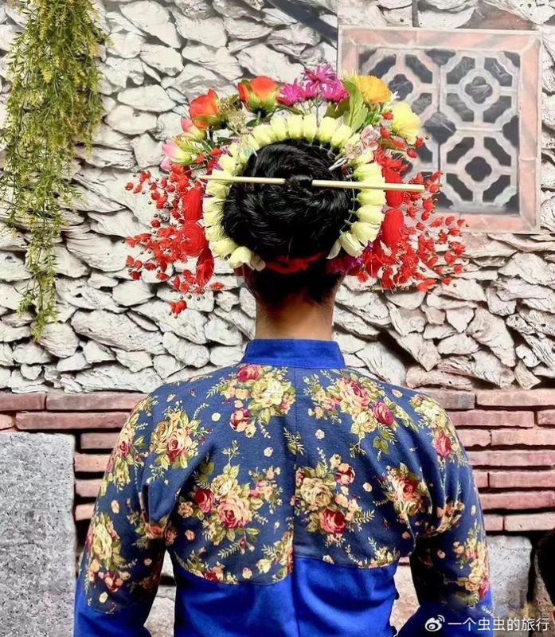

FUJIAN LIVING HERITAGE
循着闽韵，走进生活。
从一顶簪花、一曲南音开始，找到属于你的文化旅程。
本期文化切片 · 泉州把花戴在头上，
把花戴在头上，
把故事留在心里。
簪花围是蟳埔女习俗的一部分。
先读懂它，再走近它。

蟳
埔
图源：原作品图库埔
EXPLORE THE COLLECTION
把福建，慢慢读。
EVIDENCE BEFORE ANSWERS
原文检索 · 可追溯每一段文化，都有来处。
检索名录原文，展示引用依据；没有资料的事情，明确告诉你。
闽
阿闽 · 非遗资料助手本地证据问答，无需网络
默认返回原文摘录
A WELL-CONSIDERED JOURNEY
时间约束规划留半天，给一座城。
设定时间与出行方式，让每一次停留都安排得下。
山海之间
有你的一程。
有你的一程。
填好左侧的旅程条件，
看看哪些非遗体验能装进这半天。
虚线为访问顺序示意，不是道路导航。
为什么这样安排？查看依据与估算边界
YOUR CULTURAL NOTEBOOK
把想去的，留在这里。
行程保存在本机，刷新后仍在。支持重命名、恢复与导出。